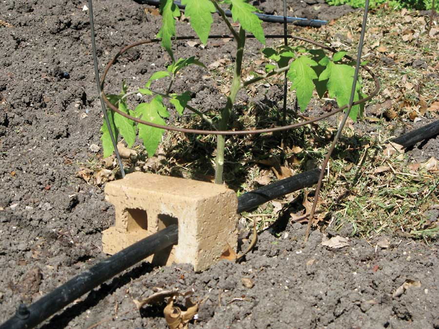

When I lay out drip watering hoses or soaker hoses, I run them through holes in bricks or concrete blocks to get the hoses and drippers to stay exactly where I want them.
The bricks I use have five holes in them, so I cut each brick in half to give me more bricks.
And the best part: The bricks were free, put out by the curb as trash.
|
 KIRK MILLER Concrete blocks keep irrigation hoses where you want them. |
|
|